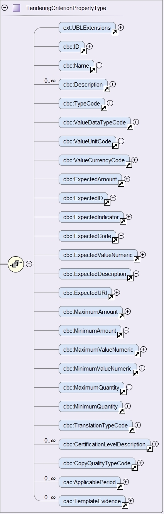

Properties
REQUIREMENT |
The buyer needs to be able to specify the type of the value it expects from the economic operator in a response; e.g. DESCRIPTION, INDICATOR, QUANTITY, URL, etc.). The economic operator must provide a value for the response that is consistent with the type specified by the buyer. |
This other XSD diagram shows the elements of the properties of a criterion:

Figure 38. cac:TenderingCriterionProperty - XSD Schema
Notice that: One sub-criterion 'is a' criterion:

Figure 39. cac:SubTenderingCriterion- XSD Schema
Expected elements
The following table lists the elements of a criterion property. Beware that the majority of the elements are the possible types of responses that the buyer can specify. The economic operator, in the ESPDResponse, must provide values that are consistent with the type specified by the buyer.
Table 23. Properties, expected elements
Class name: |
cac:TenderingCriterionProperty |
Definition: |
Caption (i.e. a 'label'), specific MS or buyer requirement (e.g. 'Number of references expected: 5' or a question addressed to the economic operator (e.g. 'Your average yearly turnover for the past three years?'. Information Requirement: tbr070-013 |
Business rule(s): |
BR-SC-20 |
File: |
ubl-2.3/xsdrt/common/UBL-CommonAggregateComponents-2.3.xsd |
Path: |
/QualificationApplicationRequest/cac:TenderingCriterion/cac:TenderingCriterionProperty |
| Components | Type | Card | Description | Requirements |
|---|---|---|---|---|
cbc:ID |
Identifier |
1 |
Identifies one specific property. |
Information Requirement: tbr070-013. Rule: Property identifiers must use UUID numbers (version 4) automatically generated. The responses of the economic operator (in the ESPD Response document) will refer to this UUID to link the response with one, and only one, criterion property. See the section about the ESPD Response for examples. Rule scope: Common (BR-TC-18, BR-OTH-02) |
cbc:Description |
Text |
1 |
The text of the caption, requirement or question. |
|
cbc:TypeCode |
Code |
1 |
The type of property. Used to verify that structure of the property is correct. |
Information Requirement: tbr070-013. Rule: Compulsory use of the CriterionElementType. Possible types are 'CAPTION, REQUIREMENT and QUESTION'. If the type is CAPTION or REQUIREMENT no answer is expected from the economic operator and therefore the cbc:ValueDataTypeCode must be set to NONE. Otherwise this value must be set to one of the values defined in the ResponseDataType Rule scope: BR-TC-20, BR-OTH-01, BR-OTH-01#14, BR-OTH-03 |
cbc:ValueDataTypeCode |
Code |
1 |
The type of answer expected by the buyer in the case of a property of type QUESTION. |
Information Requirement: tbr070-013. Rule: Compulsory use of the Code List "ResponseDataType". Verify that the value is different to NONE for properties of type QUESTION. Rule scope: Common (BR-TC-21, BR-OTH-01, BR-OTH-03, BR-OTH-01#12, BR-OTH-03) |
cbc:ValueUnitCode |
Code |
0..1 |
The unit of measure of the numeric value as a quantity or measure in the expected response from the economic operator. |
Information Requirement: tbr070-013. Rule: Verify that the value of cac:TypeCode is set to QUESTION and that the cac:ValueTypeCode is different to NONE. Rule scope: BR-OTH-01 |
cbc:ValueCurrencyCode |
Code |
0..1 |
The currency of the numeric value as an amount in the expected response from the economic operator. |
Information Requirement: tbr070-013. Rule: Verify that the value of cac:TypeCode is set to QUESTION and that the cac:ValueTypeCode is different to NONE. Rule scope: BR-OTH-01 |
cbc:ExpectedAmount |
Amount |
0..1 |
The amount in the expected response from the economic operator. |
Information Requirement: tbr070-013. |
cbc:ExpectedID |
Identifier |
0..1 |
The expected identifier that the economic operator has to provide in the criterion response. |
Information Requirement: tbr070-013. Rule: Verify that the value of cac:TypeCode is set to QUESTION and that the cac:ValueTypeCode is different to NONE. Rule scope: (BR-LOT-40) |
cbc:ExpectedCode |
Code |
0..1 |
The expected code that the economic operator has to provide in the Criterion response. |
Information Requirement: tbr070-013. Rule: Verify that the value of cac:TypeCode is set to QUESTION and that the cac:ValueTypeCode is different to NONE. Rule scope:(BR-OTH-01) |
cbc:ExpectedValueNumeric |
Numeric |
0..1 |
The expected value that the economic operator has to provide in the Criterion response. |
Information Requirement: tbr070-013. Rule: Verify that the value of cac:TypeCode is set to QUESTION and that the cac:ValueTypeCode is different to NONE. |
cbc:ExpectedDescription |
Text |
0..1 |
The description of the expected evidence that the economic operator has to provide in the Criterion response. |
Information Requirement: tbr070-013. Rule: |
cbc:MaximumValueNumeric |
Numeric |
0..1 |
The maximum value the response must have. |
Information Requirement: tbr070-013. Rule: Verify that the value of cac:TypeCode is set to QUESTION and that the cac:ValueTypeCode is different to NONE. |
cbc:MinimumValueNumeric |
Numeric |
0..1 |
The minimum value the response must have. |
Information Requirement: tbr070-013. Rule: Verify that the value of cac:TypeCode is set to QUESTION and that the cac:ValueTypeCode is different to NONE. |
cbc:CertificationLevelDescription |
Text |
0..1 |
The description of the level of the expected certification. |
Information Requirement: tbr070-013. Rule: Verify that the value of cac:TypeCode is set to QUESTION and that the cac:ValueTypeCode is different to NONE. |
cac:ApplicablePeriod |
Class |
0..1 |
The period to which this criterion property shall apply. |
Information Requirement: tbr070-013. Rule: The ESPD-EDM does only expect start date and end date. |
cac:TemplateEvidence |
Class |
0..n |
A pointer to one or more evidences that support the veracity of this criterion. |
Information Requirement: tbr070-013. Rule: None. |